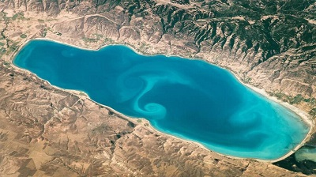

NASA Takes Picture of Bear Lake

Many Idahoans are used to looking at the spectacle of our state’s scenery from a variety of viewpoints
— high mountain peaks, deep canyons and more. But we don’t often get an out-of-this world view, literally.
On Sunday, NASA’s image of the day offered a unique look at the Idaho landscape, highlighting the deep blue
of southeast Idaho’s Bear Lake as seen from the International Space Station.